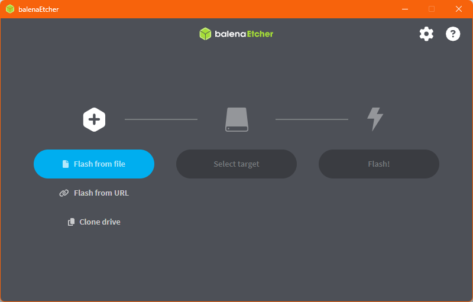
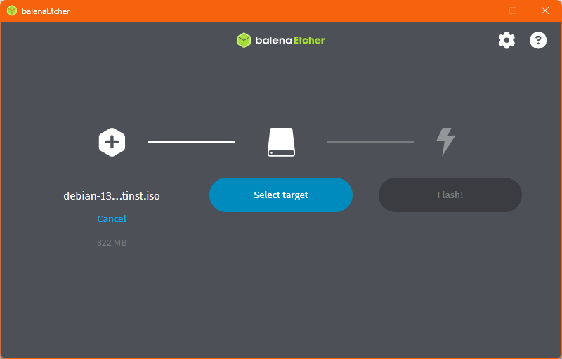
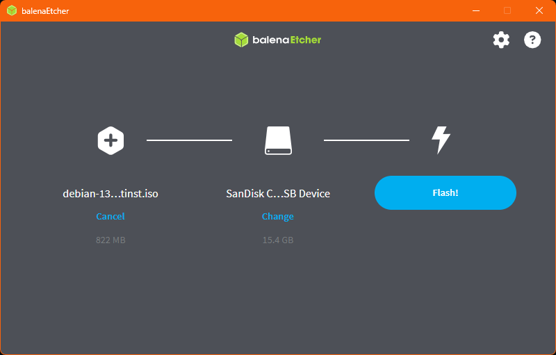

Preparing a USB
You may be wondering what we're doing with the iso file at this point. That's a pretty good question.
Unfortunately, most operating systems (if not all), don't let you change out the operating system without first booting your device from a flash drive (or a DVD if you really feel like it. I've done it. It's awful).
That iso file you downloaded, is what we're putting on that flash drive to boot from so we can install Linux. The only problem is that Windows and most operating systems don't come with a tool to do that.
A tool called Balena Etcher is going to be your friend. This will create the USB we will boot from to test and install your operating system from.
- Back up any data from your flash drive
- Install and open Balnea Etcher

Look for this page after setup - Select flash from file and choose your iso file

Image is selected. Target device is not. - If you haven't inserted your flash drive yet, insert it now. If it has, remove it and re-insert it again
- Set your flash target to your USB drive.

- ENSURE BALENA IS FLAHSING TO THE RIGHT DEVICE BEFORE FLASHING!!! All data on the target will be wiped when flashing starts
- Click the Flash button and wait for it to finish flashing
And now you have a flashed USB drive, ready to boot from.